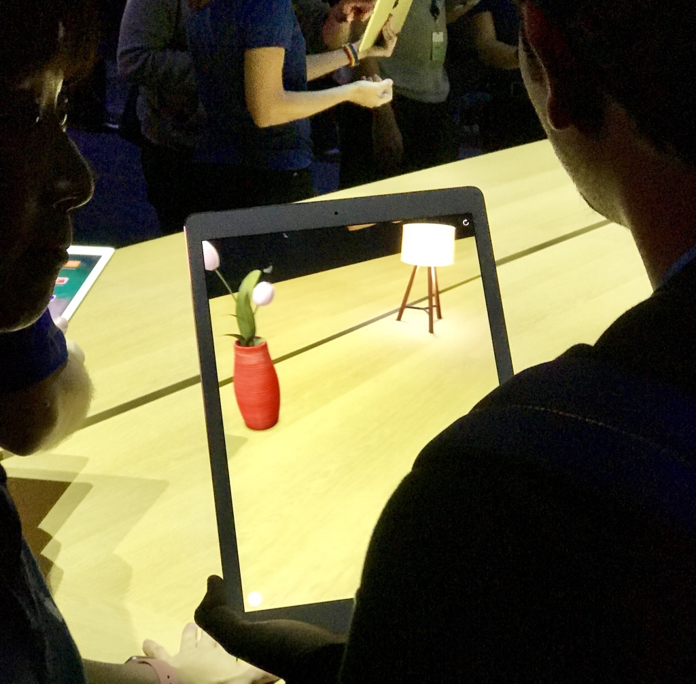
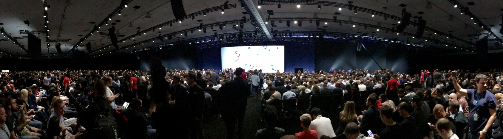
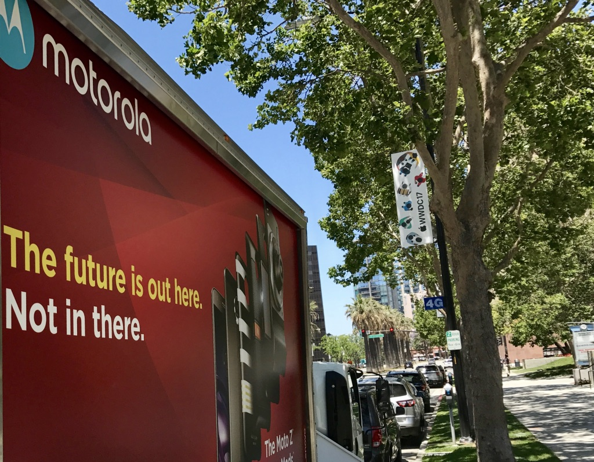

Blogg
Här finns tekniska artiklar, presentationer och nyheter om arkitektur och systemutveckling. Håll dig uppdaterad, följ oss på Twitter
Här finns tekniska artiklar, presentationer och nyheter om arkitektur och systemutveckling. Håll dig uppdaterad, följ oss på Twitter

Apple presenterade många nyheter på sin utvecklarkonferens WWDC 2017 som hölls i San Jose 5-9 juni. Den traditionella keynote som inleder konferensen var längre en vanligt - två och en halv timma - och var i det närmaste helt befriad från fluff i form av reportage från nyöppnade Apple Stores, försäljningsstatistik, reklamfilmer och inbjudna band som spelar. Istället var det fullspäckat med nyheter - och det är lätt att bli överväldigad. Jag försöker här sammanfatta några, högst personliga, intryck och intressanta trender från konferensen - med fokus på nedanstående fem områden.
Utan tvekan ett område som Apple satsar stort på. Med hjälp av ramverket AR-Kit kan man utveckla appar där virtuella miljöer placeras i den verkliga världen. Det kan röra sig om statiska föremål - t.ex. att virtuellt testa olika möbleringar i ett rum, eller animerade dynamiska miljöer - exempelvis ett datorspel i full 3D som utspelar sig på ditt köksbord.
Under huven löser Apple detta genom att i realtid kombinera bildbehandling från kameran med sensordata från den mobila enhetens gyro/accelerometer för att skapa ett verkligt koordinatsystem som de virtuella föremålen kan placeras ut i. AR-Kit kan även estimera ljusförhållanden så att man kan anpassa de virtuella objektens belysning för att få ett mer verklighetstroget intryck.
I Metal 2 - en vidarutveckling av Apples 3D-grafikramverk finns numera inbyggt stöd för VR. Metal 2 möjliggör också att via Thunderbolt 3 ansluta extern grafikhårdvara till en Mac - något som kan användas för avancerad VR och andra krävande grafiktillämpningar.

Demo av AR på nya iPad Pro - två virtuella föremål placerade på bordet
Utvecklingen inom ML går i rasande fart och det är intressant att notera att ML nu blivit mer mainstream. Faktum är att du som användare säkert redan nyttjar ML utan tänka särskilt mycket på det. Exempel på funktioner som utnyttjar ML är ansiktsigenkänning, kategorisering av bilder, förbättrad sökning i text och intelligenta förslag vid textinmatning.
Apple introducerar i år ramverket Core ML som gör det enkelt för utvecklare att inkludera ML-baserade funktioner i sina appar. Core ML gör det möjligt att importera en färdigtränad modell i utvecklingsmiljön och via ett genererat API exekvera modellen för olika indata. Exempelvis skulle man med en relevant modell kunna utveckla en app som identifierar svampsorter från bilder, och ML-delen kräver inte många kodrader. Att skapa fungerande modeller är däremot ett oerhört komplext område där det finns en rad populära verktyg (Caffe, Keras, XGBoost, LIBSVM m.fl.), och här erbjuder Apple möjlighet att importera modeller av en mängd olika typer och format. Detta sker genom Core ML tools - ett verktyg som är open source och skrivet i Python.
Core ML nyttjar en kombination CPU och grafikhårdvara (GPU), och erbjuder höga prestanda på den lokala enheten. Detta gör det möjligt att utnyttja ML i realtid t.ex. för att kontinuerligt identifiera objekt i en videoström.
Den stora nyheten var förstås HomePod - Apples nya trådlösa smarta multirumshögtalare som kommer att släppas senare i år. Men ett par andra nyheter kom litet i skymundan. Den ena är MusicKit - ett ramverk som ger full access till Apple Musics hela katalog och innehåll samt kan styra och uppdatera användarens personliga bibliotek. Med MusicKit blir det möjligt att utveckla tredjepartsappar med funktionalitet som motsvarar Apples egen spelare, eller mer specialiserade spelare som t.ex. DJ-appar och liknande. För full funktionalitet krävs att användaren har ett Apple Music-konto.
Den andra nyheten är AirPlay 2 som gör det möjligt att streama synkroniserat ljud till flera högtalare från en iOS-enhet, något som tidigare bara var möjligt från en Mac. AirPlay 2 innehåller också förbättrad buffring (minuter snarare än sekunder) vilket gör uppspelning betydligt mer robust än tidigare. Det går även att fjärrstyra uppspelning från valfri enhet inom samma nätverk.
iPad har fått extra mycket kärlek i årets upplaga av iOS - iOS 11. Några av funktionerna är drag and drop, “Dock” för enklare växling mellan appar, förbättrad split view och multitasking samt filhantering. I appen Files kan man komma åt alla filer på sin enhet och iCloud, men den kan också kopplas till externa molntjänster såsom DropBox och Google Drive. Alla funktioner kan integreras i appar via nya ramverk. Sammantaget bör detta leda till betydligt bättre användbarhet i professionella tillämpningar på iPad.
Apple lanserar nya versioner av iPad Pro med skärmstorlekarna 10,5 tum respektive 12,9 tum. Båda modellerna har fått en rad förbättringar av display, prestanda och kamera. Apple har lyckats fördubbla uppdateringsfrekvensen till 120 Hz - något som ska ge en helt ny användarupplevelse och går under namnet ProMotion. Den befintliga Apple Pencil kommer att kunna användas med de nya modellerna - men blir mer responsiv. Uppdateringsfrekvensen är variabel och anpassas efter behov - något som ska ge fortsatt bra batteritid.
Kanske inte så konstigt att det är stort fokus på utvecklarna på en utvecklarkonferens. Men det kändes ändå som att Apple har ökat sina satsningar på verktyg och ramverk som gör det enklare för utvecklarna. Utvecklingsmiljön XCode har fått en lång rad förbättringar för att underlätta hantering av stora projekt och stora team, bland annat radikalt förbättrade editor-, sök- och byggprestanda, refaktoreringeringsstöd för Swift och tätare integration med GitHub. En annan nyhet är “Wireless Development” - stöd för trådlös debugging på mobila enheter - något som är särskilt välkommet vid utveckling av hälsorelaterade appar, AR-appar mm. där man behöver genomföra testning bortom skrivbordet.
Swift kommer nu, tre år efter lanseringen, i version 4.0. Eftersom Swift är open source sker utvecklingen i en öppen process - och därmed var det mesta känt sedan tidigare. Denna release handlar mest om förfining av olika detaljer samt förbättringar av prestanda och minskat fotavtryck. Bland förbättringar kan nämnas smidigare stränghantering, enklare serialisering/deserialisering för t.ex. JSon (med bibehållen typsäkerhet) och typsäker mekanism (key path) för att hantera referens till attribut och värdetyper. Migrering från Swift 3 till Swift 4 bör vara relativt enkel då förändringarna huvudsakligen handlar om utökningar.
Ett stort antal API:er och ramverk ger tillgång till många av de avancerade funktioner som används internt i iOS/MacOS eller i Apples egna appar. Det finns ofta ramverk på olika nivåer vilket gör att man som utvecklare kan starta på en högre (och enklare) nivå och använda ramverk på lägre nivå efterhand som behov uppstår. Inom ML finns exempelvis högnivåramverken Vision för bildanalys och NLP API för språkanalys. Behöver man större kontroll kan man använda Core ML som ger mer flexibilitet men är mer komplext. För den som behöver full kontroll finns möjligheten att använda rå beräkningskapacitet via ramverken Accelerate (CPU) eller Metal (GPU).
… några ytterligare bilder från konferensen.

Spänd förväntan inför keynoten - 7000 utvecklare och journalister samlade i en jättesal

Motorola kör omkring med stora plakat i San Jose, tycker vi ska komma ut i verkligheten istället för att sitta inne och trycka på konferensen…